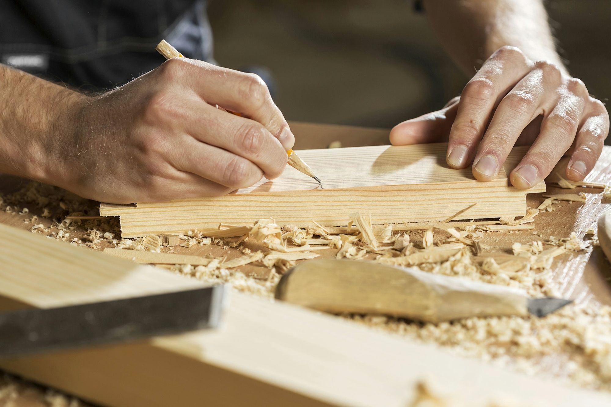
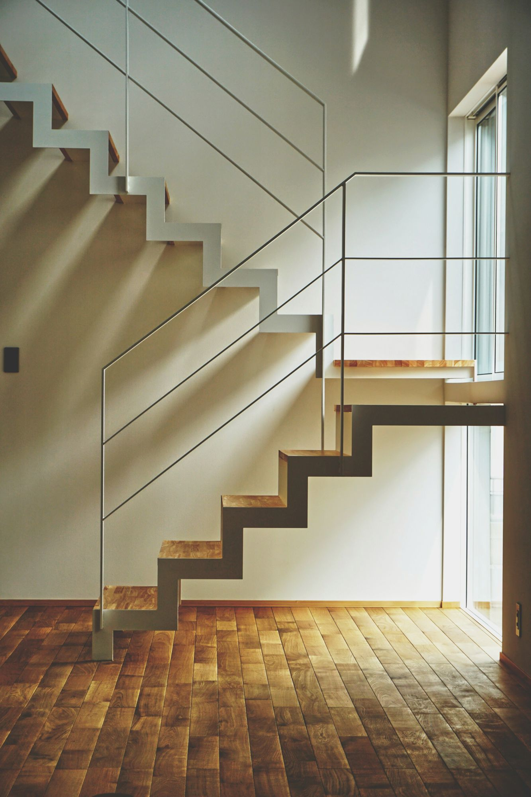
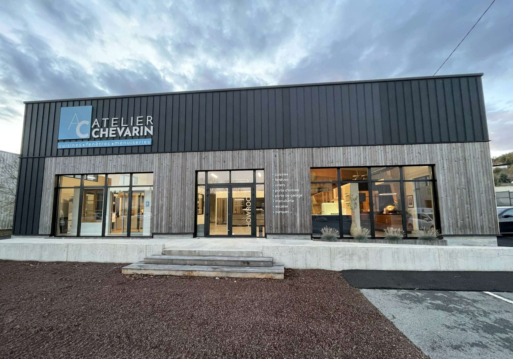
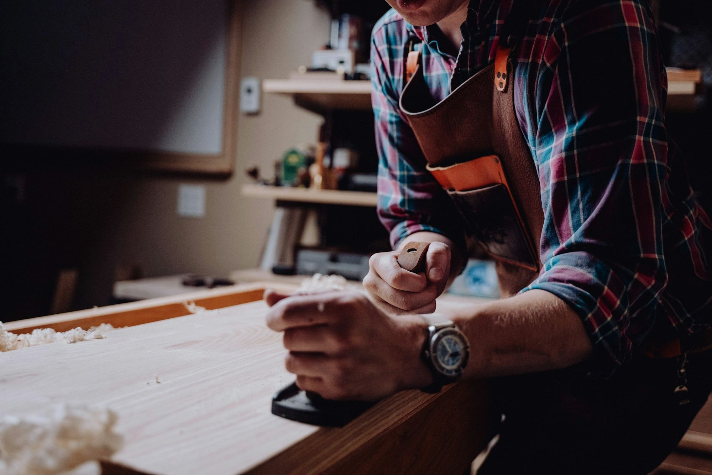
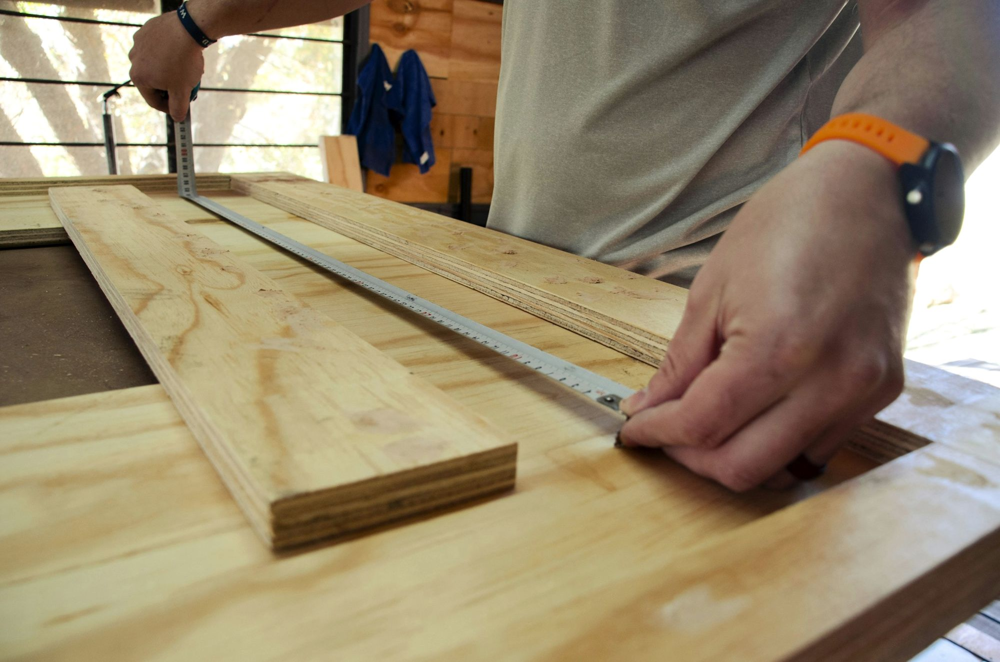
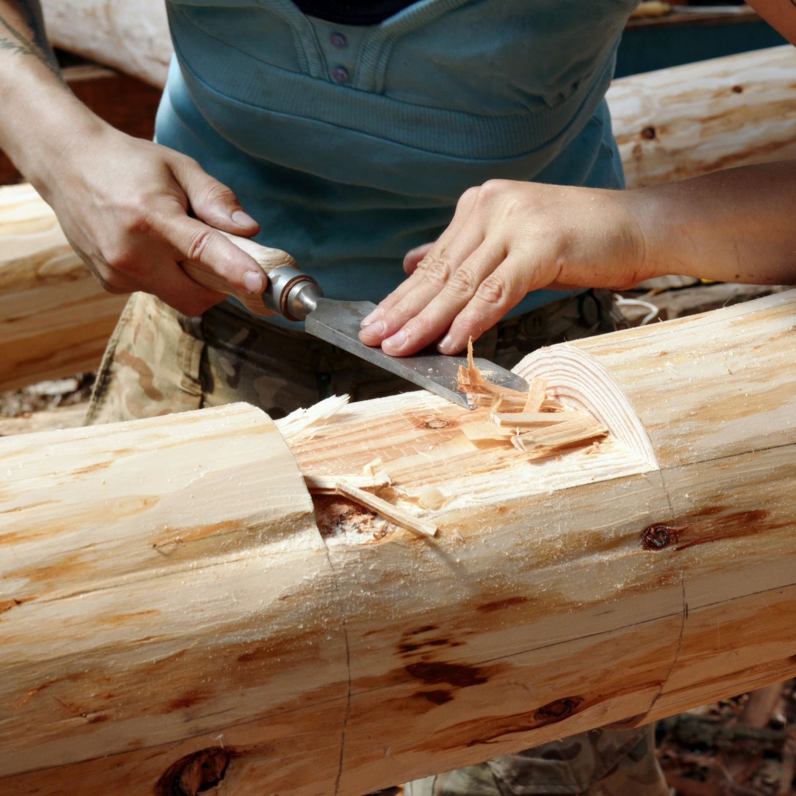

Cuisines, fenêtres, escaliers, fabriqués à Ambert.
L'Atelier Chevarin conçoit, fabrique et pose depuis 1998, du plan à la dernière vis.

Ce que fabrique l'atelier.
 →
→Cuisine
Un projet complet avec visualisation 3D réaliste, meubles, plan de travail et équipements.
 →
→Fenêtres et volets
Pose en aluminium, mixte, bois ou PVC, et menuiserie extérieure.

→Escaliers et menuiserie intérieure
Escalier fabriqué sur mesure, portes, placards, finitions.
 →
→Dressing et parquet
Aménagement intérieur et pose de parquets.
Du dessin à la pose.
Une étude personnalisée du projet, avec conseils sur les matériaux.
Pour une cuisine, un rendu 3D réaliste avant la fabrication.
Menuiseries françaises sur mesure, fabriquées à l'atelier d'Ambert.
Réalisée par les équipes de l'atelier, dans les règles de l'art.
Accueil et conseil sur place, pour choisir avec les matériaux sous les yeux.

Un showroom pour choisir sur place.
L'Atelier Chevarin accueille et conseille dans son showroom d'Ambert : on y voit les matériaux avant de décider.
Nous contacterDes mains, du bois, des machines.





Conçu et fabriqué dans l'atelier, posé par nos équipes.Ce que l'atelier met en avant sur son site, depuis 1998
Autour d'Ambert, dans le Livradois.
Les communes que dessert l'atelier.
Questions fréquentes.
Fabriquez-vous vos menuiseries ?
Oui. L'atelier conçoit et fabrique des menuiseries françaises sur mesure, puis les pose avec ses propres équipes.
Puis-je voir ma cuisine avant sa fabrication ?
Pour l'aménagement de cuisine, un projet complet est présenté avec une visualisation 3D réaliste.
Quels types de fenêtres posez-vous ?
Des fenêtres en aluminium, mixtes, en bois ou en PVC, ainsi que des volets.
Fabriquez-vous des escaliers ?
Oui, des escaliers sur mesure, avec la menuiserie intérieure.
Où se trouve le showroom ?
À l'Atelier Chevarin, à Ambert : l'équipe y accueille et conseille les clients.
Dans quelles communes intervenez-vous ?
Autour d'Ambert : Marsac-en-Livradois, Arlanc, Bertignat, Saint-Amant-Roche-Savine, Marat, Vertolaye, Job, Saint-Germain-l'Herm, Viverols.
Un escalier, une cuisine, des fenêtres ?
Décrivez votre projet : l'atelier revient vers vous.